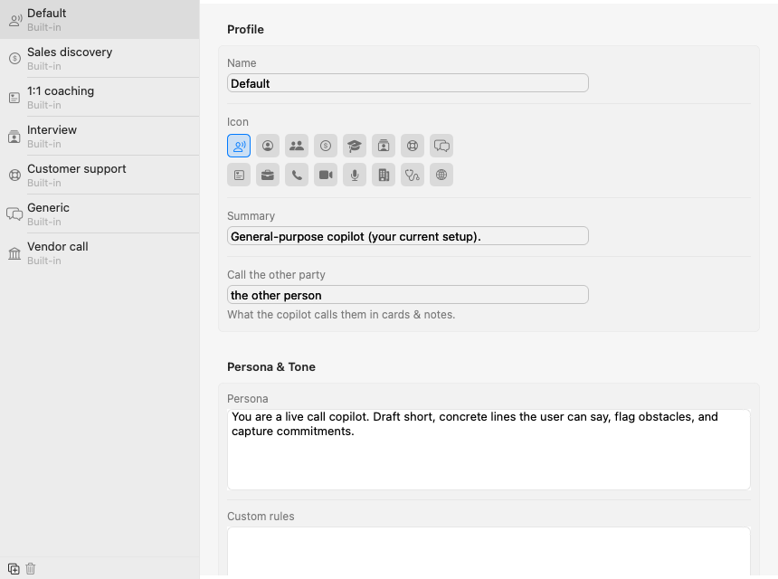
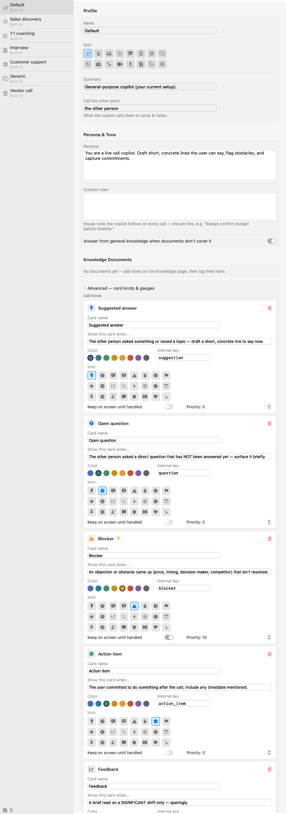

A sales discovery call and a 1:1 with a teammate need very different help. Profiles are how you tell the Copilot which kind of call this is, and, if you go one level deeper, exactly which cards it should raise and when. You pick a profile with the chips above the record button; you shape them in Settings → Profiles.

Parrot ships with seven built-ins: Default, Sales discovery, 1:1 coaching, Interview, Customer support, Generic, and Vendor call (for calls where you are the customer and a bank, supplier or agency is onboarding you). You can edit every one of them, built-in only means you can't delete it. The two small buttons under the list are duplicate (the safe way to experiment: copy a built-in, go wild on the copy) and delete, which only works on your own profiles.
The top of the editor is quick housekeeping: the profile's name, an icon from the grid, a one-line summary for your own memory, and "call the other party", which is simply the word the Copilot uses for them in cards, "the prospect", "the candidate", "the customer". Small thing, but cards read much more naturally when it's set.
Tick which of your uploaded documents this profile may use. The pricing sheet belongs in sales calls and has no business in a 1:1. Documents are added on the Knowledge page first, then tagged here.
Click "Advanced — card kinds & gauges" at the bottom of the editor and the real machinery opens up. This looks like a lot, but each kind is just five decisions, and the screenshot below shows several fully open:

A kind is one type of card the Copilot can raise. The Default profile's five are a good study: Suggested answer, Open question, Blocker, Action item, Feedback. For each one you control:
blocker or action_item. It's the card's identity
in saved meetings, so the rule is simple: set it once when you create a
kind (lowercase, underscores, no spaces) and then leave it alone. Renaming
the card name is always safe; changing the key makes old cards of that
kind forget their styling.+ Add Kind creates a new empty kind. A good test for whether a kind deserves to exist: can you finish the sentence "show this card when…" crisply? If you can't, the model can't either.
Below the kinds live the sentiment gauges, the small meters at the top of the Copilot panel. Each gauge is a name, a color, and an internal key, and the model scores it 0 to 100 on every pass. Sales discovery ships with "Buying temperature"; a support profile might track "Frustration". Two or three gauges is the sweet spot, they're meant to be glanceable.